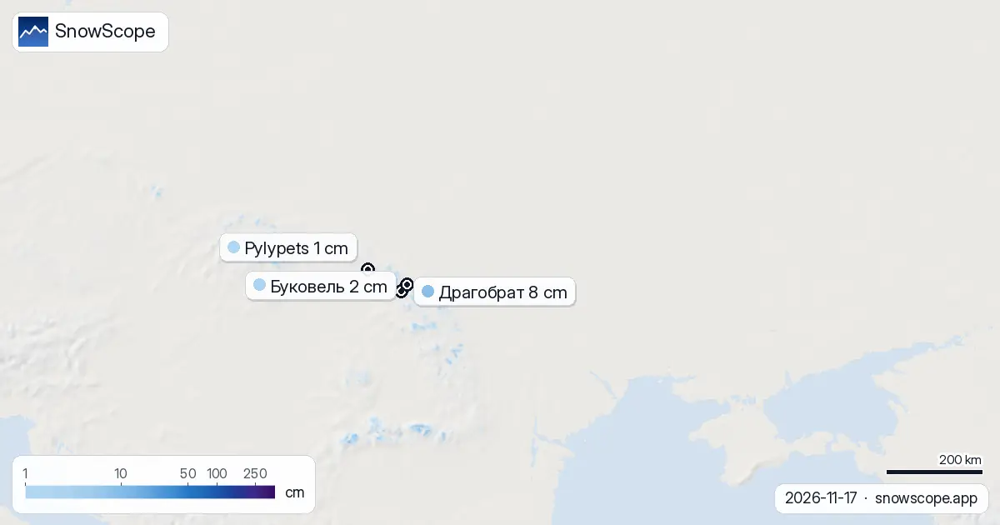

Mild day in Ukraine's Carpathians: the snow retreats to 1,400 m
Yesterday about 1,650 km² was white in Ukraine's Carpathians; today 1,080 km² is left, 570 km² less in one day.
See the live snow forecast for Драгобрат in the SnowScope appSnow depth, powder alerts and the 3D map, free.
A mild day eats the snow
Mild air hits the thin snow of the valleys first. Expect wet, heavy snow low down in the afternoon and firm, icy patches the next morning.
In Ukraine's Carpathians, about 1,080 km² of high ground is white today, down 570 km² on yesterday. In other words, 6 % of the mapped high ground is white.
| Resort | Snow depth | New snow, 72 h | Coming, next days | Top |
|---|---|---|---|---|
| Драгобрат | 8 cm | 10 cm | 17 cm | 1,706 m |
| Буковель | 2 cm | 2 cm | 5 cm | 1,370 m |
| Pylypets | 1 cm | 3 cm | 2 cm | 1,165 m |

How deep it is, height by height
By height, the picture looks like this: 500-1,000 m: on average under 1 cm (1 % of the ground white); 1,000-1,500 m: on average under 1 cm (16 % of the ground white); 1,500-2,000 m: on average 4 cm (83 % of the ground white).
Shortlist for the weekend
At the top of the list, Драгобрат reports 8 cm.
Next on the list: Буковель (2 cm) and Pylypets (1 cm).
Драгобрат picked up 10 cm in the last three days and could add 17 cm by Friday 20 November.
Буковель picked up 2 cm in the last three days and could add 5 cm by Friday 20 November.
Count 3 white resorts out of 20 in Ukraine's Carpathians today.
The rest of the shortlist: Pylypets: 1 cm on top, 3 cm in three days, 2 cm expected.
The next days
Over the next three days up to 12 cm is expected, and up to 21 cm over the week.
Friday 20 November stands out, with up to 8 cm in a day.
Skiing conditions
The snow is retreating uphill, so plan on the higher lifts and avoid the low valley runs.
With more snow in the forecast, the next days should improve things further.
Today's snow cover
Seven days ago the figure was 5,610 km², 4,530 km² more than now. The snow line sits near 1,400 m.
The latest snowfall
Three-day totals peak at 6 cm, around the Borzhava ridge, the Gorgany and Chornohora.
In the past day, up to 4 cm was added.
About 260 km² received at least 5 cm.
The neighbours today
For comparison, the neighbours on the same day: Romania: 6 % white, deepest Borsec with 27 cm, up to 12 cm in the week ahead; Poland: 6 % white, deepest Karpacz with 36 cm, up to 12 cm in the week ahead.
Planning a day on the snow
Above 1,500 m the ground is almost fully white (83 % covered), so runs up there have a continuous base.
Below 1,000 m the slopes are still almost bare.
If you can choose the day, go after Friday 20 November: the fresh snow then has time to settle and the roads to be cleared.
Tips for skiers
- Early-season snow is thin over rocks: ski the groomed runs first.
- Morning snow is firm after a clear night: wait for the sun on south faces.
- Roads to the higher resorts may need winter tyres or chains.
About these numbers
Resort snow depths are the deepest snow on the resort's upper slopes from the SnowScope snow model (about 1 km, run of 17 November); they are estimates for an area, not a measurement at one point. Station values are measurements on the date shown. Forecasts can change. Always read the official avalanche bulletin before going off-piste.
Cite this report
For research, teaching or the press: the numbers and charts are free to reuse under CC BY 4.0 with this citation.
SnowScope (2026), Mild day in Ukraine's Carpathians: the snow retreats to 1,400 m, https://snowscope.app/blog/en/2026/11/ukraine-snow-report-17-november-2026.html, accessed 2026-11-17
SnowScope (Atlas Labs). (2026, November 17). Mild day in Ukraine's Carpathians: the snow retreats to 1,400 m. SnowScope snow reports. https://snowscope.app/blog/en/2026/11/ukraine-snow-report-17-november-2026.html
BibTeX
@misc{snowscope2026ukrainesnowreport17novem,
author = {{SnowScope (Atlas Labs)}},
title = {Mild day in Ukraine's Carpathians: the snow retreats to 1,400 m},
year = {2026},
month = nov,
howpublished = {\url{https://snowscope.app/blog/en/2026/11/ukraine-snow-report-17-november-2026.html}},
note = {Published 2026-11-17 12:53 UTC; accessed 2026-11-17}
}· CC BY 4.0 · Methods, data and tools →
Драгобрат: snow and temperature by height, this winter vs last (tools) →
Follow Драгобрат
Free: a message when fresh snow is coming, and the forecast every morning.
More snow reports

Deer Valley ski conditions on 13 November 2026: no real snow on the ground yet, about 4 in near the top from the weekend storm, rain on the low East Village side below about 6,700 to 7,600 ft, and 11 in up top over the week.

Bogus Basin snow check for Boise skiers on 13 November 2026: no snow on the ground yet, rain and mixed snow this weekend with a snow level near 6,300 to 6,800 ft, then colder air and about 8 in at the summit by next week.